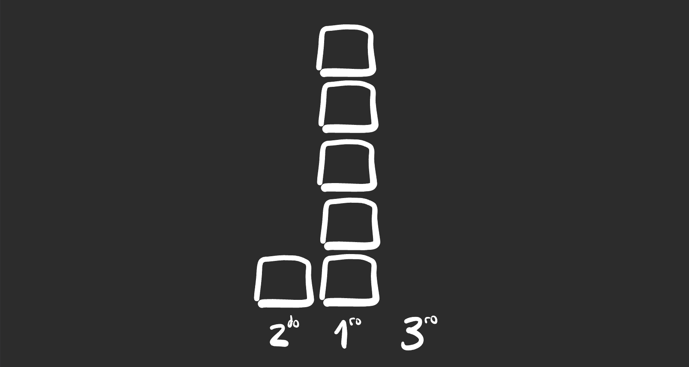
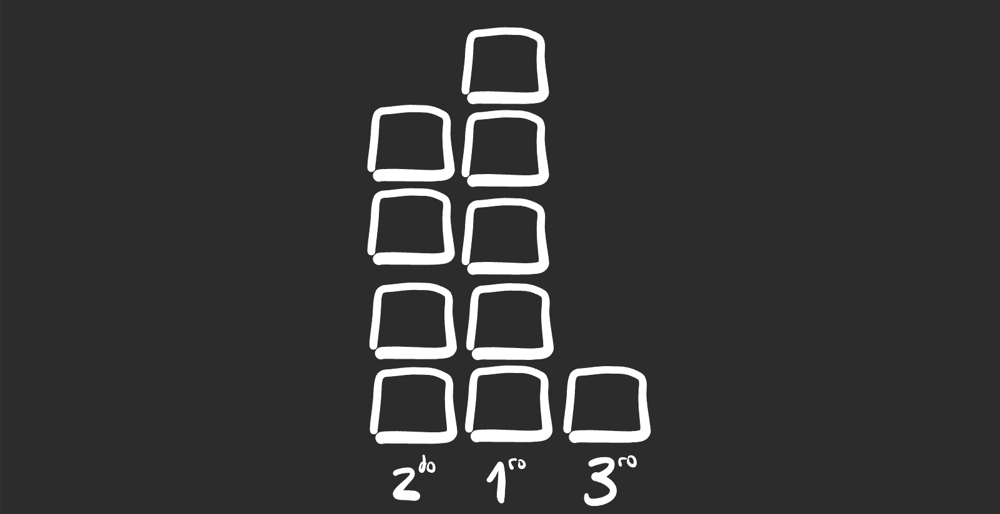
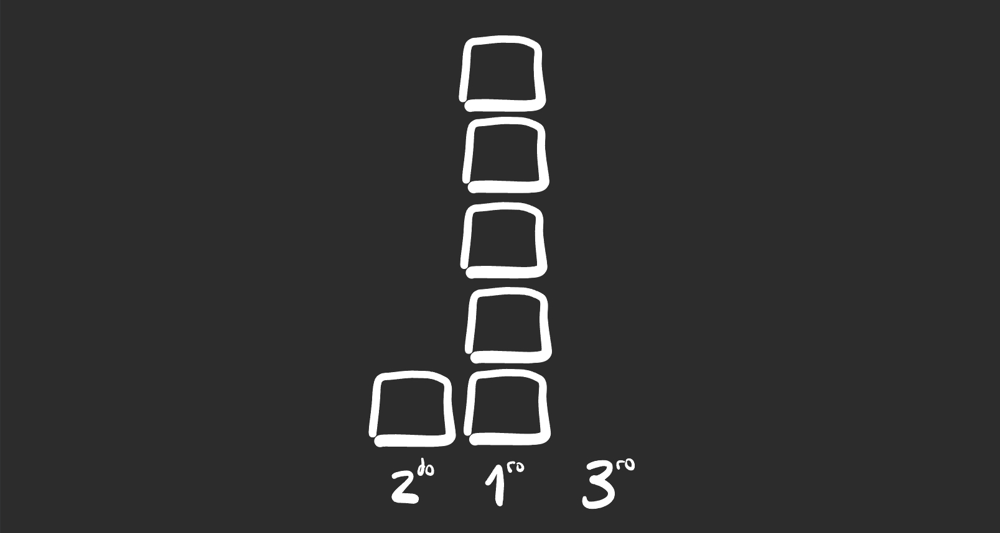
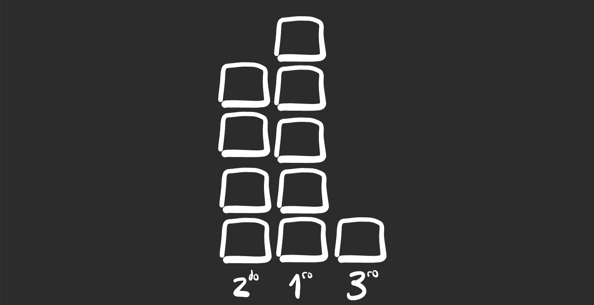

Race Ceremony
2023 Aug 16
See all posts
Race Ceremony
Vuelvo al blog. El primer cuatrimestre 2023 fue intenso: cambio de
trabajo, facultad, novia 🤗. En este segunda parte del año tengo como
objetivo escribir algo todas las semanas, hay un gran backlog de temas
así que si no hay nuevos posts será exclusivamente por falta de tiempo
🥲
Introducción
El año pasado, intentando generar un pedacito de código nuevo todos
los días, me propuse resolver un problema de código por día durante 90
días (al principio fueron 60 pero la emoción lo llevo a 90). Algo de eso
en 60 days ok
kata.
Codewars es una plataforma que permite a usuarios resolver problemas
de programación, algo así como un dojo de karate, cada problemita se
llama kata y hay de distintos temas y niveles. Si como yo,
usted cree que la práctica hace la perfección, codewars es ÉL lugar para
practicar código y problem solving.
Al final del challenge me había hecho muy amigo de la plataforma,
after all la usaba todos los días. Fue por una de esas que se
me ocurrió contribuir de otro forma: proponiendo nuevos katas en lugar
de resolverlos.
Así fue como, volviendo a algunos ejercicios de la facultad y con un
poco de ingenio y storytelling nació Race
Ceremony | Codewars
La idea de esta post es compartir las dificultades del problema, el
proceso de resolución y una posible solución.
Descripción del problema
El problema es algo así (en codewars está en inglés pero acá va en
castellano):
La competencia nacional de karting tiene lugar en tu ciudad y te llamaron para construir el podio de ganadores con los bloques de madera disponibles. Gracias a que vivís en una zona maderera, la cantidad de bloques disponibles es siempre al menos 6.
Recordá que un podio de ganadores tiene tres plataformas para las tres primeras posiciones, donde el primer lugar es el más alto y el segundo es más alto que el tercero, además ser ordenan 2do - 1ro - 3ro (Ver imagen)
Los organizadores quieren un podio que cumpla:
1) El primer lugar tenga altura mínima
2) El segundo lugar tenga altura lo más cercana posible al primero, o lo que es igual, que la diferencia de altura entre el primer y segundo lugar sea mínima
3) Todas las plataformas tengan altura mayor a cero
Your misión, should you choose to accept it, es determinar la cantidad de bloques de madera a utilizar en las plataformas del podio, ordenadas 2do, 1ro, 3ro.
Entendiendo el problema
Cualquiera que haya visto una carrera habrá visto un podio de
ganadores, la imagen de la portada sirve como aproximación: se tienen
tres plataformas para los primeros tres puestos de la carrera con
distintas alturas dependiendo la posición, obviamente el 1er puesto el
más alto y el 2do más alto que el 3ro.
En el problema nos dicen que las plataformas se van a realizar con
bloques de madera apilados, suponemos que son todos iguales. También nos
dicen que siempre serán a lo sumo 6, ok.
Lo que puede llamar la atención y agregar algo de dificultad son las
✨condiciones✨ que piden los organizadores. Ya no alcanza con agarrar
los bloques y armar cualquier podio que cumpla con las alturas, sino que
piden un podio específico, aquel que cumpla a la vez las tres
condiciones que se mencionan.
Acá es donde sirve arrancar a armar ejemplos para ver qué es lo que
se pide e intentar encontrar un algoritmo para resolverlo.
Imaginemos que tenemos 6 bloques, podríamos hacer un podío que tenga
5 bloques para el 1ro, uno para el 2do y ninguno para el 3ro
 Con 6 bloques sin
restricciones se puede armar un podio 1,5,0
Sin emgargo, se ve facilmente que este podio no cumple con la última
condición: todas las posiciones tienen que tener altura mayor a
cero.
Podemos solucionarlo sacando un bloque de 1ro y asignandolo a 3ro.
Sin embargo es fácil ver que esto rompe las alturas porque 2do y 3ro
quedarían ambos con altura 1. Hay que sacar uno más de 1ro y agregarlo a
2do.
Pasando un bloque de 1ro a 3ro rompe las alturas (y deja una forma
poco amigable)
Pasando un bloque más de 1ro a 2do queda como necesitamos
Al finalizar estos dos movimientos, queda un podio con alturas 2,3,1
que cumple las tres condiciones.
A medida que se agregan bloques, deja de ser tan claro como
dividirlos para cumplir con las tres condiciones.
Veamos por ejemplo el caso de 10 bloques. Podriamos armar un podio
que tenga alturas 2,7,1 que cumple las condiciones de alturas para las
posiciones y que todas son mayores a 0.
Sin embargo también nos piden que la altura del 1er puesto sea mínima
y que la diferencia de altura entre 1ro y 2do también sea mínima.
La cosa ahora es ver como podemos chequear que una altura es mínima,
antes podíamos ver el dibujo y darnos cuenta si cumplía las condiciones,
ahora ya no es posible.
Altura mínima, cuando nos dicen que algo es mínimo también nos dicen
que cualquier otra cosa es más grande que ese mínimo. Entonces para
probar que la altura del primer puesto es mínima debemos probar que no
existe ningún otro podio que tenga altura menor.
Volviendo a los 10 bloques, si encontramos algún podio que tenga
altura de primer lugar menor a 7 podremos decir que 7 no es la altura
mínima. Si por ejemplo pasamos un bloque de 1ro a 2do, nos queda 3,6,1.
Si ahora pasamos uno de 1ro a 3ro nos queda 3,5,2 y ya no podemos seguir
cambiando bloques. 3,5,2 parece un buen candidato a cumplir con las tres
condiciones.
Parece que la altura no puede ser menor a 5, pues dado que tenemos 10
bloques, si dividimos los 10 bloques en 3 nos queda 3,33 bloques y si
queremos que el 1er puesto sea más grande que los otros dos
necesariamente debemos sumar dos bloques a esa primera división.
Queda verificar la segunda condición, que la diferencia de altura
entre 1ro y 2do sea mínima. Igual que antes, vemos si no existe alguna
combinación que logre reducir esta diferencia.
Volvamos al momento en que teníamos 3,6,1. Si volvemos a mover un
bloque de 1ro a 2do nos queda 4,5,1

En este caso, la altura de 1ro sigue siendo 5 (mínima), y se redujo
la diferencia de altura entre 1ro y 2do a un bloque. Esta configuración
cumple con todas las condiciones pedidas.
Todavía no se ve un muy claro un algoritmo que pueda resolver el
problema cumpliendo todas las condiciones.
A bit of álgebra
Sí, el problema está inspirado en un problema de álgebra que me
tomaron en la facultad. Lo primero que hay que ver es que la cantidad de
bloques no está acotada, puede ser cualquier cosa (incluso números muy
grandes). Cualquier algoritmo que itere sobre la cantidad de bloques
puede ser muy costoso.
Veamos el siguiente algoritmo. Nos dan los bloques y los dividimos en
tres pilas iguales. Tendríamos un podio con las tres plataformas
iguales, no sirve.
Por ejemplo, con 6 bloques, dividimos los bloques en 3 grupos iguales
y nos quedan 3 plataformas con 2 bloques cada una y no sobran bloques.
Para arreglar las alturas, podemos pasar un bloque de 3ro a 1ro y nos
queda la combinación 2,3,1 que es solución de 6 bloques.
Con 7 bloques, nos quedan de nuevo 3 plataformas con 2 bloques cada
una y sobra un bloque. Agregamos el que sobra a 1ro y pasamos uno de 3ro
a 1ro, nos quedaría la combinación 2,4,1.
Con 8 bloques, nos vuelve a quedar 3 plataformas de 2 bloques cada
una y sobran dos bloques. Agregamos uno de los que sobran a 1ro y el
otro a 2do y listo.
Con 9 bloques, armamos tres plataformas de 3 bloques cada una y no
sobran bloques.
En este punto creo no conviene seguir haciendo ejemplos para
convencerse que hay un patrón que se repite, al dividir la cantidad de
bloques por 3 y ver cuantos sobran, estamos generando una clase de
equivalencia. Solo nos importa el resto que sobrevive al dividir la
cantidad de bloques por 3.
Para nuestro algoritmo, tener 6 bloques, 9 o 93 (3*31) es igual
porque en los tres casos el resto al dividirlos por 3 es 0.
Así, vamos a tener tres clases de equivalencia:
- Todas las cantidades de bloques que al dividirlas por 3 tengan resto
0
- Todas las cantidades de bloques que al dividirlas por 3 tengan resto
1
- Todas las cantidades de bloques que al dividirlas por 3 tengan resto
2
Y lo más importante, cualquier número que nos den siempre va a caer
en una (y solo una) de estas clases.
Algoritmo
Usando la intuición del paso anterior podemos diseñar el algoritmo.
Lo primero que va a hacer es calcular la división entera de la cantidad
de bloques por 3, como hicimos en los ejemplos. Luego dependiendo el
resto de la división va a tomar uno de los tres posibles caminos.
// Implementación del algoritmo en C++
vector<int> race_podium(int blocks) {
int cociente = floor(blocks / 3);
vector<int> res;
if (blocks == 7) res = {cociente, cociente + 2, cociente -1};
else if (blocks % 3 == 0) res = {cociente, cociente + 1, cociente - 1};
else if (blocks % 3 == 1) res = {cociente + 1, cociente + 2, cociente - 2};
else res = {cociente + 1, cociente + 2, cociente - 1};
return res;
}
Conclusiones
No me quiero seguir extendiendo, creo que el post ya quedó bastante
largo. Solo quiero dejar la reflexión de lo valioso que es en muchas
ocasiones tener conceptos matemáticos dando vueltas en la mente a la
hora de resolver problemas usando código.
La matemática, bien enseñada, ayuda un montón a la hora de resolver
problemas, de alguna forma moldea la mente para pensar en forma lógica y
algoritmica, encontrar patrones, etc.
En el link a codewars se pueden ver otras soluciones, algunas muy
interesantes :)
Race Ceremony
2023 Aug 16 See all postsVuelvo al blog. El primer cuatrimestre 2023 fue intenso: cambio de trabajo, facultad, novia 🤗. En este segunda parte del año tengo como objetivo escribir algo todas las semanas, hay un gran backlog de temas así que si no hay nuevos posts será exclusivamente por falta de tiempo 🥲
Introducción
El año pasado, intentando generar un pedacito de código nuevo todos los días, me propuse resolver un problema de código por día durante 90 días (al principio fueron 60 pero la emoción lo llevo a 90). Algo de eso en 60 days ok kata.
Codewars es una plataforma que permite a usuarios resolver problemas de programación, algo así como un dojo de karate, cada problemita se llama kata y hay de distintos temas y niveles. Si como yo, usted cree que la práctica hace la perfección, codewars es ÉL lugar para practicar código y problem solving.
Al final del challenge me había hecho muy amigo de la plataforma, after all la usaba todos los días. Fue por una de esas que se me ocurrió contribuir de otro forma: proponiendo nuevos katas en lugar de resolverlos.
Así fue como, volviendo a algunos ejercicios de la facultad y con un poco de ingenio y storytelling nació Race Ceremony | Codewars
La idea de esta post es compartir las dificultades del problema, el proceso de resolución y una posible solución.
Descripción del problema
El problema es algo así (en codewars está en inglés pero acá va en castellano):
Entendiendo el problema
Cualquiera que haya visto una carrera habrá visto un podio de ganadores, la imagen de la portada sirve como aproximación: se tienen tres plataformas para los primeros tres puestos de la carrera con distintas alturas dependiendo la posición, obviamente el 1er puesto el más alto y el 2do más alto que el 3ro.
En el problema nos dicen que las plataformas se van a realizar con bloques de madera apilados, suponemos que son todos iguales. También nos dicen que siempre serán a lo sumo 6, ok.
Lo que puede llamar la atención y agregar algo de dificultad son las ✨condiciones✨ que piden los organizadores. Ya no alcanza con agarrar los bloques y armar cualquier podio que cumpla con las alturas, sino que piden un podio específico, aquel que cumpla a la vez las tres condiciones que se mencionan.
Acá es donde sirve arrancar a armar ejemplos para ver qué es lo que se pide e intentar encontrar un algoritmo para resolverlo.
Imaginemos que tenemos 6 bloques, podríamos hacer un podío que tenga 5 bloques para el 1ro, uno para el 2do y ninguno para el 3ro
 Con 6 bloques sin restricciones se puede armar un podio 1,5,0
Sin emgargo, se ve facilmente que este podio no cumple con la última condición: todas las posiciones tienen que tener altura mayor a cero.
Podemos solucionarlo sacando un bloque de 1ro y asignandolo a 3ro. Sin embargo es fácil ver que esto rompe las alturas porque 2do y 3ro quedarían ambos con altura 1. Hay que sacar uno más de 1ro y agregarlo a 2do.
Pasando un bloque de 1ro a 3ro rompe las alturas (y deja una forma poco amigable)
Pasando un bloque más de 1ro a 2do queda como necesitamos
Al finalizar estos dos movimientos, queda un podio con alturas 2,3,1 que cumple las tres condiciones.
A medida que se agregan bloques, deja de ser tan claro como dividirlos para cumplir con las tres condiciones.
Veamos por ejemplo el caso de 10 bloques. Podriamos armar un podio que tenga alturas 2,7,1 que cumple las condiciones de alturas para las posiciones y que todas son mayores a 0.
Sin embargo también nos piden que la altura del 1er puesto sea mínima y que la diferencia de altura entre 1ro y 2do también sea mínima.
La cosa ahora es ver como podemos chequear que una altura es mínima, antes podíamos ver el dibujo y darnos cuenta si cumplía las condiciones, ahora ya no es posible.
Altura mínima, cuando nos dicen que algo es mínimo también nos dicen que cualquier otra cosa es más grande que ese mínimo. Entonces para probar que la altura del primer puesto es mínima debemos probar que no existe ningún otro podio que tenga altura menor.
Volviendo a los 10 bloques, si encontramos algún podio que tenga altura de primer lugar menor a 7 podremos decir que 7 no es la altura mínima. Si por ejemplo pasamos un bloque de 1ro a 2do, nos queda 3,6,1. Si ahora pasamos uno de 1ro a 3ro nos queda 3,5,2 y ya no podemos seguir cambiando bloques. 3,5,2 parece un buen candidato a cumplir con las tres condiciones.
Parece que la altura no puede ser menor a 5, pues dado que tenemos 10 bloques, si dividimos los 10 bloques en 3 nos queda 3,33 bloques y si queremos que el 1er puesto sea más grande que los otros dos necesariamente debemos sumar dos bloques a esa primera división.
Queda verificar la segunda condición, que la diferencia de altura entre 1ro y 2do sea mínima. Igual que antes, vemos si no existe alguna combinación que logre reducir esta diferencia.
Volvamos al momento en que teníamos 3,6,1. Si volvemos a mover un bloque de 1ro a 2do nos queda 4,5,1

En este caso, la altura de 1ro sigue siendo 5 (mínima), y se redujo la diferencia de altura entre 1ro y 2do a un bloque. Esta configuración cumple con todas las condiciones pedidas.
Todavía no se ve un muy claro un algoritmo que pueda resolver el problema cumpliendo todas las condiciones.
A bit of álgebra
Sí, el problema está inspirado en un problema de álgebra que me tomaron en la facultad. Lo primero que hay que ver es que la cantidad de bloques no está acotada, puede ser cualquier cosa (incluso números muy grandes). Cualquier algoritmo que itere sobre la cantidad de bloques puede ser muy costoso.
Veamos el siguiente algoritmo. Nos dan los bloques y los dividimos en tres pilas iguales. Tendríamos un podio con las tres plataformas iguales, no sirve.
Por ejemplo, con 6 bloques, dividimos los bloques en 3 grupos iguales y nos quedan 3 plataformas con 2 bloques cada una y no sobran bloques. Para arreglar las alturas, podemos pasar un bloque de 3ro a 1ro y nos queda la combinación 2,3,1 que es solución de 6 bloques.
Con 7 bloques, nos quedan de nuevo 3 plataformas con 2 bloques cada una y sobra un bloque. Agregamos el que sobra a 1ro y pasamos uno de 3ro a 1ro, nos quedaría la combinación 2,4,1.
Con 8 bloques, nos vuelve a quedar 3 plataformas de 2 bloques cada una y sobran dos bloques. Agregamos uno de los que sobran a 1ro y el otro a 2do y listo.
Con 9 bloques, armamos tres plataformas de 3 bloques cada una y no sobran bloques.
En este punto creo no conviene seguir haciendo ejemplos para convencerse que hay un patrón que se repite, al dividir la cantidad de bloques por 3 y ver cuantos sobran, estamos generando una clase de equivalencia. Solo nos importa el resto que sobrevive al dividir la cantidad de bloques por 3.
Para nuestro algoritmo, tener 6 bloques, 9 o 93 (3*31) es igual porque en los tres casos el resto al dividirlos por 3 es 0.
Así, vamos a tener tres clases de equivalencia:
Y lo más importante, cualquier número que nos den siempre va a caer en una (y solo una) de estas clases.
Algoritmo
Usando la intuición del paso anterior podemos diseñar el algoritmo. Lo primero que va a hacer es calcular la división entera de la cantidad de bloques por 3, como hicimos en los ejemplos. Luego dependiendo el resto de la división va a tomar uno de los tres posibles caminos.
Conclusiones
No me quiero seguir extendiendo, creo que el post ya quedó bastante largo. Solo quiero dejar la reflexión de lo valioso que es en muchas ocasiones tener conceptos matemáticos dando vueltas en la mente a la hora de resolver problemas usando código.
La matemática, bien enseñada, ayuda un montón a la hora de resolver problemas, de alguna forma moldea la mente para pensar en forma lógica y algoritmica, encontrar patrones, etc.
En el link a codewars se pueden ver otras soluciones, algunas muy interesantes :)